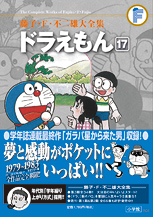

| |

＜1979年度〜1983年度
生まれの学年誌掲載集＞
定価：本体1,700円＋税
A5判／590ページ
好評発売中！
★は初めて単行本に収録される
作品です。
※収録内容は変更になる
場合があります。

|
＜1979年度生まれ編＞
| 動物指キャップ（小学一年生1986年4月号） |
| 実物ジオラマ（小学一年生1986年5月号） |
| ワープペン（小学一年生1986年6月号） |
| カサイラズ（小学一年生1986年7月号） |
中身ごとのびちぢみカップ
（小学一年生1986年8月号） |
こうつうきせいタイマー
（小学二年生1987年4月号） |
| なかまバッジ（小学二年生1987年5月号） |
| 人間貯金箱製造機（小学四年生1989年4月号） |
| 泣くなジャイ子よ（小学四年生1989年5月号） |
| 空とぶマンガ本（小学四年生1989年6月号） |
いつでもどこでもスケッチセット
（小学四年生1989年7月号） |
| 恐怖のディナーショー（小学四年生1989年8月号） |
落としものカムバックスプレー
（小学四年生1989年9月号） |
やりすぎ！ のぞみ実現機
（小学四年生1989年10月号） |
| マジックの使い道（小学四年生1989年11月号） |
| あなただけの物ガス（小学四年生1989年12月号） |
| スピード増感ゴーグル（小学四年生1990年1月号） |
まわりのお天気集めよう
（小学四年生1990年2月号） |
タイムピストルで“じゃまもの”は消せ
（小学四年生1990年3月号） |
＜1980年度生まれ編＞
| どこでもふうせん（小学一年生1987年4月号） |
| モクモクマン（小学一年生1987年5月号） |
フリーサイズぬいぐるみカメラ
（小学三年生1989年4月号） |
| ★セルフアラーム（小学三年生1989年5月号） |
| つづきをヨロシク（小学三年生1989年6月号） |
| そのときどこにいた（小学三年生1989年7月号） |
| 野比家は三十階（小学三年生1989年8月号） |
強力ウルトラスーパーデラックス錠
（小学三年生1989年9月号） |
ドラえもんが重病に？
（小学三年生1989年10月号） |
| 全体復元液（小学三年生1989年11月号） |
深海潜水艇たった二百円!!
（小学三年生1989年12月号） |
★高層マンション脱出大作戦
（小学三年生1990年1月号） |
|
| 万能クリーナー（小学三年生1990年2月号） |
| 宇宙戦艦のび太を襲う（小学四年生1990年4月号） |
| ラジ難チュー難の相？（小学四年生1990年5月号） |
| 仙人らくらくコース（小学四年生1990年6月号） |
| 身がわりテレビ（小学四年生1990年7月号） |
| ハワイがやってくる（小学四年生1990年8月号） |
| 万能プリンター（小学四年生1990年9月号） |
★そっくりペットフード
（小学四年生1990年10月号） |
| ボトルシップ大海戦（小学四年生1990年11月号） |
★空まです通しフレーム
（小学四年生1991年1月号） |
| 身がわり紙人形（小学四年生1991年3月号） |
＜1981年度生まれ編＞
ネコののび太いりませんか
（小学三年生1990年4月号） |
| 食べて歌ってバイオ花見（小学三年生1990年5月号） |
| もぐれ！ ハマグリパック（小学三年生1990年6月号） |
★七万年前の日本へ行こう
（小学三年生1990年7月号） |
★ダルマさんころんだ帽
（小学三年生1990年8月号） |
| バランストレーナー（小学三年生1990年9月号） |
| ★手作りおもちゃ（小学三年生1990年11月号） |
流れ星ゆうどうがさ
（小学三年生1990年12月号） |
★こわ〜い！ 「百鬼線香」と「説明絵巻」
（小学四年生1991年4月号） |
＜1983年度生まれ編＞
＜連載中編＞
ガラパ星からきた男
（小学三〜五年生1994年7月号〜9月号） |
※複数誌に同じ作品が同時掲載された場合は、原則として上の学年の掲載誌リストに入れています。
※1982年度生まれの学年誌掲載の「ドラえもん」はすべて上の学年との同時掲載、もしくは再録です。 |